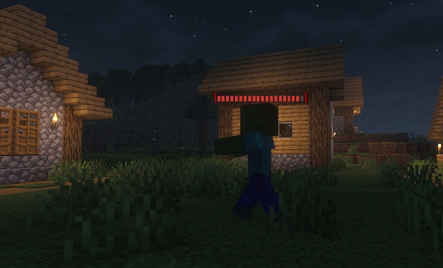
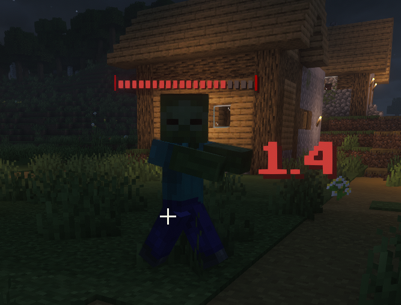

Une barre de vie s’affiche désormais au-dessus des mobs et des joueurs.
Elle permet de voir en temps réel les points de vie restants, que ce soit en combat ou lors d’interactions.
Cette fonctionnalité rend les affrontements plus lisibles et stratégiques, en vous donnant une meilleure vision de l’état de vos adversaires ou de vos alliés.
Elle améliore ainsi l’expérience de jeu en apportant plus de clarté, de précision et de réactivité.

L’indicateur de dégâts utilise un système de codes couleurs pour mieux comprendre les actions en combat :
Rouge : indique les dégâts infligés
Vert : indique les soins reçus
Jaune : indique l’absorption gagnée
Violet : indique l’absorption perdue
Ce système permet de visualiser rapidement ce qu’il se passe pendant un combat, en offrant une lecture claire et instantanée des effets appliqués.
